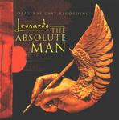

| Artist: | Leonardo |
| Title: | The Absolute Man |
| Label: | Magna Carta MAX-9029-2 |
| Length(s): | 66 minutes |
| Year(s) of release: | 2001 |
| Month of review: | [07/2001] |
| 1) | Apparition | 5.42 |
| 2) | Aria For Italy | 0.49 |
| 3) | With Father | 1.48 |
| 4) | Reins Of Tuscan | 5.49 |
| 5) | Reproach | 1.11 |
| 6) | Mona Lisa | 7.11 |
| 7) | Il Divino | 3.22 |
| 8) | Inundation | 1.08 |
| 9) | Apprentice | 6.56 |
| 10) | First Commission | 3.47 |
| 11) | Mother Of God | 1.06 |
| 12) | This Time, This Way | 6.05 |
| 13) | Inventions | 5.13 |
| 14) | Shaping The Invisible | 4.54 |
| 15) | Introduction To Francois I | 1.20 |
| 16) | Heart Of France | 5.57 |
| 17) | Sacrament | 1.11 |
| 18) | End Of A World | 2.12 |
In Aria For Italy we hear some rather abrasive keyboard playing. Think Magellan or Sherinian here. Soon however we come to the first vocal track where Leonardo in the person of LaBrie reminisces about his youth, his life so far. A rather moody opening, but we rock on into Reins Of Tuscan. Here we hear Josh Pincus of Ice Age. I get the impression of too many lyrics for a single line. The guy sings on an on in his first verse. A very different track from the previous with its high-powered chorus (Magellan style) and the variation both vocally as well as rhythmically. Add to this some fast jazzy piano playing and heavy guitars round the clock. In this track LaBrie sings both higher and louder, and then I am not too fond of his voice. The song ends with somewhat classical piano, nicely melodic.
Reproach is a melodic interlude, with majestic overtones and harpsichord arrangement and military drums. A nice filmic intermezzo before we come to Mona Lisa, a ballad for sung by LaBrie. A very strong ballad with fast classical sounding interjections in the bombastic style of Kansas and some Queen like choruses. What I do not like about LaBrie's voice is when his voice becomes louder and sharper, a coldness creeping in. On this track, it only happens a few times. The lyrics are quite well-integrated into the way the music evolves. This is necessary for making a succesful rock opera (or musical in rock style). The song ends with a poppy chorus and a Brain May style guitar solo.
Il Divino is another strong progressive intermezzo with grand melodies. Short but effective. Inundation is a more restful piece with harpsichord again and great thematic material.
Apprentice is like Reins Of Tuscan a rather hectic piece with not a so friendly sounding Chorus singing the role of the students. There is a part where any vocalists sing together and alternatingly, but also a part where LaBrie is doing all the "talking". Actually, his vocals could have been a bit more melodic and warmer. Magellan is the main reference here.
First Comission is sung by Steve Walsh and Michelle Young, a wonderful medieval ballad with Walsh in great form. This guy has drama, technique and warmth. One might be tempted to think of Ayreon sometimes here, but of course Walsh also makes one think of Kansas.
After the choral Mother Of God we come to This Time, This Way. It opens rather optimistic. This is a power/love ballad with LaBrie and Lisa Bouchelle duetting. Bouchelle sings with a very low voice, a bit in the style of Cher.
Inventions is up-tempo rock again. I especially like Shryack's voice here, Walsh and LaBrie being a bit too unmelodic. Driven rock, but vocally not much to my liking. A different story is Shaping The Invisible which features an imposing performance by LaBrie (yes, really). Sad and balladic the music becomes more powerful at the end, but the melodicity stays.
Introduction To Francois I is a short interlude for introducing Leonardo at the court of France. Playful and at times bombastic stuff. Leonardo dies in Heart Of France, which opens with others singing. A bit of a mellow melody at times, a bit too melodramatic. The sound is very full with all kinds of keyboards filling up the gaps.
After the short Sacrament, the album closes down with the fantastic End Of A World with a vocal chorus in which you cna discover all the vocalists (such as Steve Walsh). A rather chaotic performance, but oh so effective.